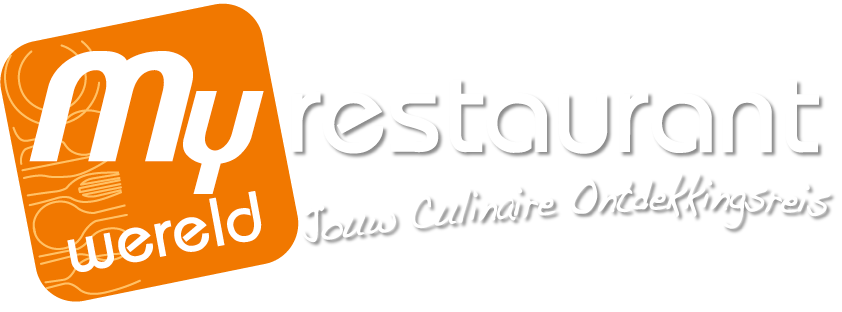
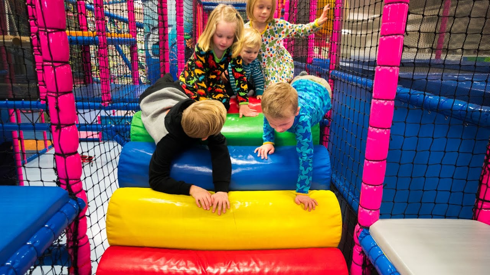

Aziatisch wokken
Vlees, vis en groentes

Reserveren
Restaurant MyWereld Doetinchem
All-inclusive live cooking & buffet: wokken, teppanyaki, BBQ grill, sushi en een groot dessertbuffet. Inclusief huiswijn, tapbier, fris, koffie en thee.
per persoon, 2 uur onbeperkt
Kerstdagen: u kunt weer reserveren! Geef uw reservering door aan de receptie of bel (0314) 745 188. Vraag ons naar de tijden en de kerstprijs.
Ons restaurant is voorzien van airco.
Restaurant MyWereld is een uniek restaurant met een dynamische wereldkeuken in een sfeervolle ambiance, waar kwaliteit en gastvrijheid voorop staan. Wij werken met het all-inclusive concept:
Onbeperkt genieten van al onze buffetten en live-cooking-stations, inclusief huiswijnen, tapbier, frisdranken, verse jus, koffie en thee. Er is voor ieder wat wils.
Vlees, vis en groentes

T-bone, entrecote/ribeye, spareribs

Meer dan 20 soorten
Vlees en vis, vers van de bakplaat
Foe yong hai, babi pangang, geroosterd buikspek, gebakken bananen, kipkerrie, kipfilet in gonbao saus, ossenhaas in zwarte bonen saus, nasi, bami, mihoen, rijst en nog meer
Een wisselend aanbod uit de wereldkeuken, met seizoensgerechten
Gerookte zalmfilet, gerookte makreel, haring, garnalen en nog meer
Diverse salades en rauwkost
Tomatensoep en soep van de dag
Kipnuggets, frikandellen, bitterballen, frites, ebi fry garnalen, mini loempia's, kerrie driehoekjes, aardappelwedges, pizzaslices, pasta en nog meer
Magnifiek afsluiten, met een verse roomijsmachine
Per persoon, voor 2 uur all-in. Gerechten, huiswijnen, tapbier en alcoholvrije dranken (verse jus d'orange, sappen, frisdranken, slush puppy, koffie en thee) zijn inbegrepen. Gedistilleerd tegen meerprijs.
Voorbeeld: een kind van 3 jaar betaalt 3 × €3 = €9, een kind van 4 jaar 4 × €3 = €12. Kinderen van 0 t/m 2 jaar graag wel vermelden bij het reserveren (in verband met een plaats aan tafel).
Op speciale dagen en feestdagen geldt het weekendtarief: Valentijnsdag, Koningsdag, Moederdag, Vaderdag, Bevrijdingsdag, Goede Vrijdag, Pasen, Hemelvaartsdag, Pinksteren, Sinterklaas, kerstavond, oudejaarsavond en nieuwjaarsdag. Tijdens de kerstdagen geldt een ander tarief: vraag ons naar de kerstprijs.
U betaalt met pin of contant. Om wachtrijen bij de ontvangstbalie te beperken maken wij per gezelschap één rekening op, die u vooraf voldoet.
De jarige krijgt tot wel 100% korting op een 2 uur all-in diner op de dag van de verjaardag. Hoe meer betalende volwassenen (12+) er meekomen, hoe hoger de korting.
Jarige + 1 betalende volwassene
Jarige + 2 betalende volwassenen
Jarige + 3 of meer betalende volwassenen
Alleen geldig op vertoon van een geldig legitimatiebewijs en op de dag van de verjaardag. Valt uw verjaardag op een maandag (gesloten)? Dan geldt de actie op de eerstvolgende dinsdag. Voor de jarige-acties kunnen geen uitzonderingen worden gemaakt.

Kinderen zijn volledig in hun element bij MyWereld. Het speciale kinderbuffet heeft friet, poffertjes, bitterballen, pizzaslices en nog veel meer. En zelf een Slush Puppy tappen is natuurlijk super. Ook de chocoladefonteinen met koekjes en marshmallows zijn een feest.
Klaar met eten? Dan vermaken de kinderen zich in de speelkamer. Voor kinderen tot en met 11 jaar betaalt u extra aantrekkelijke tarieven.
Ouders blijven altijd verantwoordelijk voor hun eigen kinderen, ook in de speelruimte.

Een diner voor twee, een verjaardagsfeest, familiediner, vrijgezellenfeest of een bedrijfsuitje met honderden personen: MyWereld is dé locatie voor uw culinaire uitje. Uw wensen en voorkeuren zijn ons uitgangspunt.
Reserveer tijdig, dan garanderen wij een passende ruimte. Komt u met een groep vanaf 20 personen (12 jaar of ouder)? Vraag dan vrijblijvend een offerte aan.
Dagelijks telefonisch bereikbaar. Op rekening dineren kan voor bedrijven en instellingen die bij de KvK zijn ingeschreven (supplement €10 administratiekosten, vooraf melden).
Staat uw vraag er niet bij? Bel 0314 745 188 of mail info@mywereld.nl.
U betaalt voor de tijdsduur, met één rekening per tafel. Alle gerechten en alcoholvrije consumpties zijn inbegrepen, net als huiswijn en tapbier. Het arrangement is er vanaf 2 uur.
Nee, de arrangementen beginnen bij 2 uur. Korter blijven mag natuurlijk wel.
Per gezelschap geldt één type arrangement. Iemand kan wel eerder vertrekken of later aansluiten.
Als er ruimte is, kan dat. Verlengen kost €3,- per persoon per half uur; u rekent dit bij vertrek af aan de receptie. Voor kinderen is verlengen gratis.
Wij raden aan telefonisch te reserveren via 0314 745 188. Online aanvragen bevestigen wij binnen 24 uur. Reserveren voor dezelfde dag kan alleen telefonisch.
Zeker. Geef suikervrij, koemelkvrij, glutenvrij of vegetarisch aan bij uw reservering of bij binnenkomst. Uw gastheer of gastvrouw wijst u de passende gerechten aan.
Er is een kinderbuffet, het Grande Dessert Buffet en een kinderspeelruimte.
Ja, er is ruim gratis parkeergelegenheid voor de deur, op Woonboulevard-Oost.
Met pin of contant; creditcards accepteren wij niet. U kunt ook (deels) betalen met de MyWereld Cadeau Cheque, verkrijgbaar bij de receptie. Dinercheques en VVV-cadeaubonnen accepteren wij niet.
Ja, voor bedrijven en instellingen die zijn ingeschreven bij de KvK, met een supplement van €10 administratiekosten. Meld dit vooraf en neem een geldig legitimatiebewijs en een visitekaartje (factuuradres) mee; u tekent de kassabon.
Valt een speciale dag op een maandag? Dan is MyWereld geopend. Met Pasen waren wij dit jaar op 1e en 2e Paasdag open van 16:00 tot 22:00.
Gratis parkeren voor de deur.
Zoek je een bijbaan, in de zomermaanden en/of daarna? Stuur een e-mail naar info@mywereld.nl.